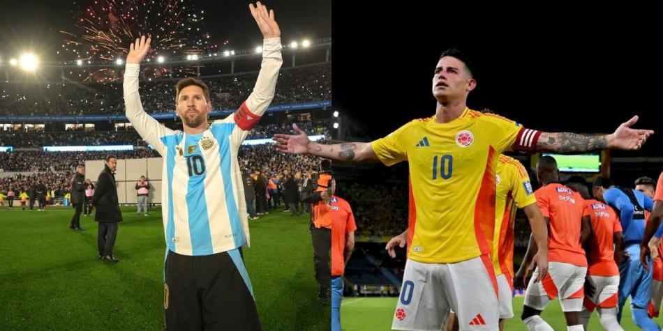

Colombia merece mirar hacia adentro: el valor de nuestros héroes antes que el adiós de Messi
📸 Foto: MESSI Y JAMES RODRIGUEZ
En los últimos días, el fútbol mundial se ha detenido ante una noticia que muchos veían venir: el posible retiro de Lionel Messi después de las eliminatorias sudamericanas. Las redes, los medios y hasta los aficionados más casuales han llenado el ambiente con nostalgia y gratitud hacia el astro argentino. Pero mientras todo el continente parece mirar hacia el sur, aquí en Colombia hay algo que no deberíamos dejar pasar desapercibido: la grandeza de nuestros propios jugadores, de aquellos que han dejado alma, vida y corazón por la camiseta amarilla.
Porque sí, Messi es una leyenda mundial. Nadie lo discute. Pero no podemos seguir viviendo bajo la sombra de lo extranjero cuando también tenemos historia, talento y orgullo en casa. Nuestros jugadores también han escrito páginas doradas. Han llorado con nosotros, nos han hecho vibrar y han llevado nuestra bandera a lo más alto, muchas veces contra todo pronóstico y en medio de la crítica.
Uno de esos símbolos, quizás el más representativo de los últimos tiempos, es James Rodríguez. Ese niño que soñaba con ser grande, que desde Envigado conquistó el mundo, que nos hizo saltar de emoción en el Mundial de Brasil 2014, que puso el nombre de Colombia en los labios de millones de personas. James no solo fue fútbol: fue emoción, fue identidad, fue un reflejo de lo que somos los colombianos cuando creemos en nosotros mismos.
Y por eso, lo que ocurrió en el estadio Metropolitano de Barranquilla hace poco no puede pasar inadvertido. James, sentado en el banco, mirando al público con una mezcla de nostalgia y serenidad, pareció estar despidiéndose del escenario que tantas veces lo vio brillar. No fue una despedida oficial, pero sí una de esas imágenes que pesan más que mil palabras. Era el rostro de un ídolo aceptando el paso del tiempo, de un líder entendiendo que quizás su ciclo se acerca al final.
@rojitass53 🇨🇴🔥Disfrutemos de lo último de esta era de la selección colombiana #futbol⚽️ #noticias #opinion #futbolcolombiano🇨🇴 ♬ sonido original - rojitass
Mientras el mundo habla del adiós de Messi, nosotros deberíamos hablar del legado de James, de Cuadrado, de Ospina, de Falcao. Hombres que, con errores y aciertos, pusieron el nombre de Colombia en el mapa del fútbol mundial. Jugadores que no nacieron en potencias europeas, que no tuvieron todo servido, que se hicieron a pulso, con hambre, con lucha.
Es momento de darle a nuestros jugadores el reconocimiento que merecen. De entender que el amor por la camiseta no solo se demuestra cuando ganamos, sino cuando reconocemos a quienes han construido el camino. Mientras todos miran hacia Argentina para despedir al 10 más grande del mundo, nosotros deberíamos mirar hacia adentro y valorar a nuestros 10, a nuestros capitanes, a quienes encendieron la ilusión de un país entero.
Quizás James ya no corra como antes, quizás Falcao ya no marque cada domingo, pero su huella está ahí, tatuada en nuestra historia. Y eso no se borra. Porque el verdadero legado no es levantar trofeos, sino levantar emociones. Y en eso, los nuestros también han sido gigantes.
El día que aprendamos a darle más importancia a nuestros héroes que a los ajenos, Colombia no solo será una potencia en talento, sino también en orgullo. El fútbol no se trata solo de ver hacia afuera, sino de recordar quiénes somos y quiénes nos hicieron creer.
Así que mientras el mundo llora el posible adiós de Messi, yo prefiero aplaudir de pie a James Rodríguez, sentado en el Metropolitano, mirando al cielo barranquillero con la misma pasión con la que un país entero lo vio brillar.
Porque a veces los verdaderos adioses no se gritan… se sienten.